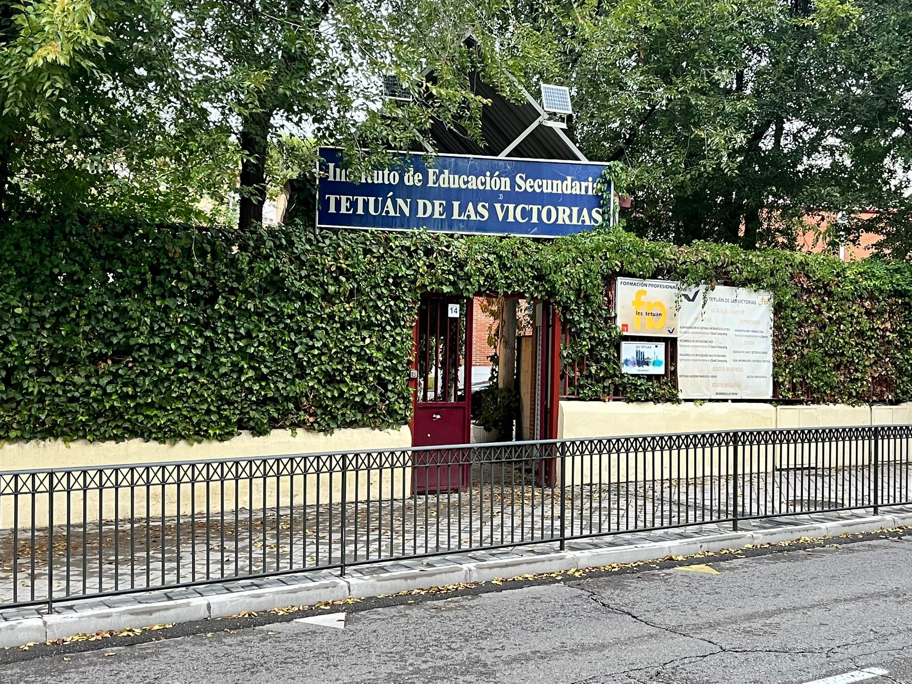
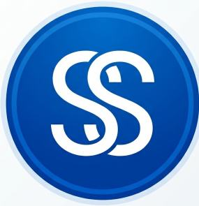
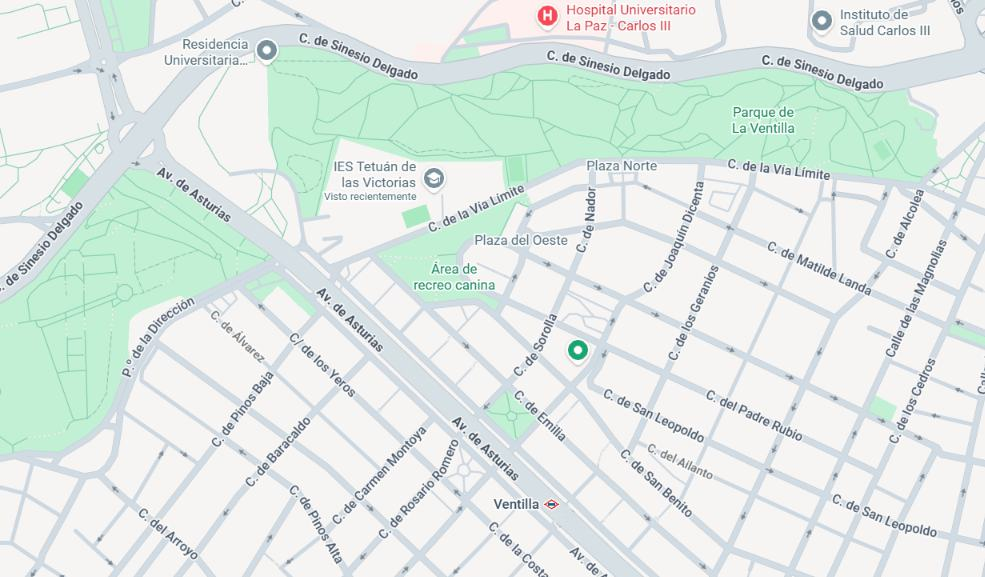
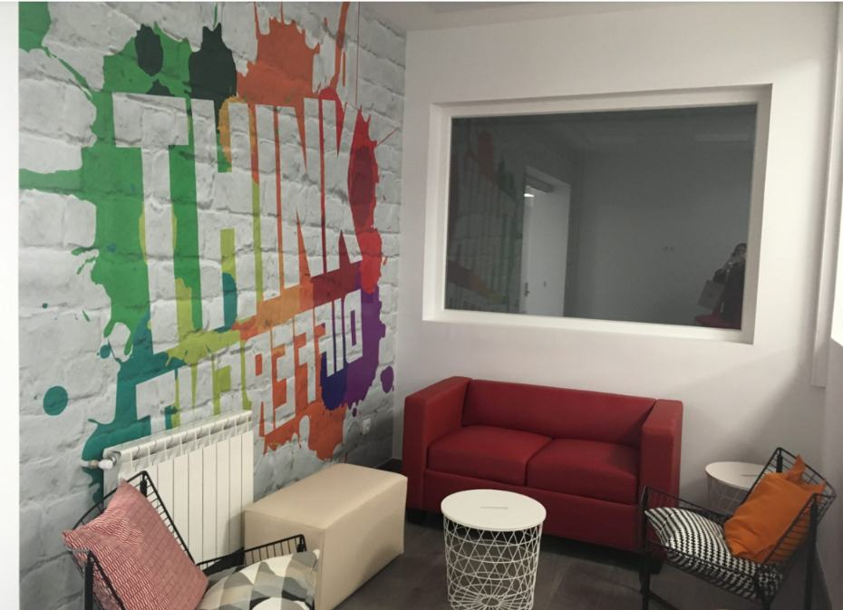
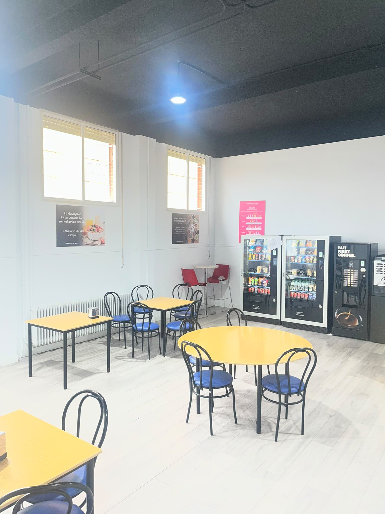
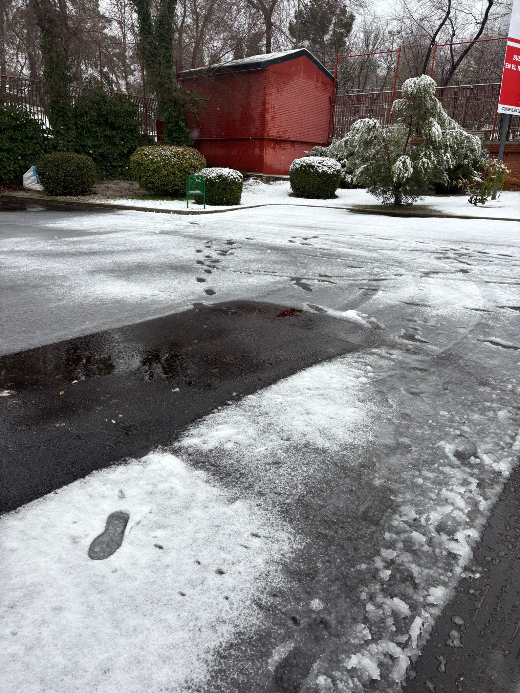
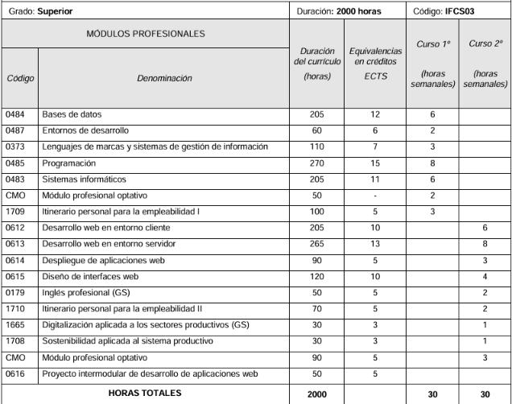

Programación
Aprendes lógica de programación, algoritmos, estructuras de datos y Orientación a Objetos en Java.
Descubre mi experiencia como alumno,
lo que he aprendido y lo que el instituto
ha aportado a mi formación.

El centro
Conoce el lugar donde desarrollo mi formación y mi experiencia como estudiante.
Este es mi favicono, como en mi nombre tengo una doble S y no conozco a nadie que le pase creo que es algo que me da cierta exclusividad, además tiene el color azul porque es un color serio y también es mi color favorito.

Una mirada al centro, sus espacios, servicios y entorno.

El IES Tetuán de las Victorias es un centro educativo público de Madrid donde gracias a los recursos digitales actualizados nos permite a nosotros, los alumnos, a estar dentro del mundo tecnologico, realizando trabajos que gracias a esto fomenta el trabajo en equipo y la creatividad. Los profesores del centro son muy buenos en lo que hacen y se preocupan por sus alumnos teniendo asi una cercania con el profesor que en pocos lados encuentras. La localizacion es bastante buena puesto que, a sus alrededores tenemos metro, supermecado, policia y hasta bomberos.
Dirección:
C. de la Vía Límite, 14,
Tetuán, 28029 Madrid
Zona: Tetuan
Transporte: Se puede llegar tanto a pie, como en bus o en metro bajandote en Ventilla
Algunos de los espacios que forman parte del centro.



Recursos y servicios disponibles para los estudiantes.
Mi formación, los módulos que he estudiado.

Aprendes lógica de programación, algoritmos, estructuras de datos y Orientación a Objetos en Java.
Diseñar y estructurar información. Aprendes SQL para hacer consultas, crear tablas, relaciones y procedimientos.
Prevención de riesgos laborales, contratos, nóminas y derechos laborales básicos.
Cómo funciona un ordenador y una red a bajo nivel. Redes locales, comandos de consola en Linux (Ubuntu/Debian) y Windows, gestión de usuarios, permisos y virtualización.
Das HTML, CSS, algo de XML.
Aprender a usar las herramientas de trabajo diarias del programador: IDEs, control de versiones con Git y GitHub, pruebas unitarias y diagramas UML.
Toda la parte visual, maquetación avanzada, accesibilidad y usabilidad. Aprendes Sass, frameworks CSS, diseño responsive y prototipado.
Aprender lo que hay detrás de una web, usando PHP o Java.
La parte con la que interactúa el usuario. Se aprende JavaScript a fondo.
Cómo subir tu proyecto a producción y mantenerlo vivo. Instalación y configuración de servidores web.